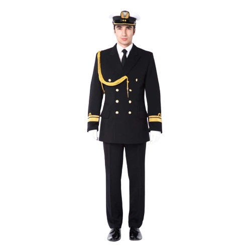
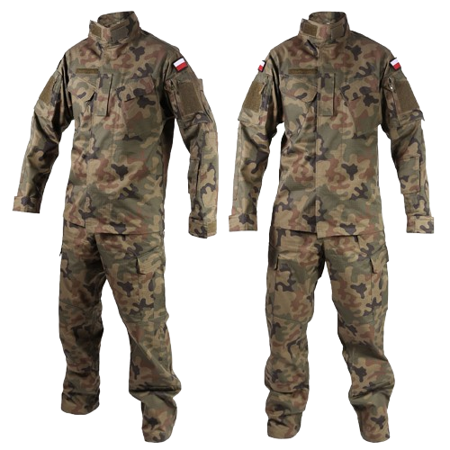

Im Militär trägt man Uniformen. Im weiteren Verlauf der Seite werde ich versuchen, in ein paar Worten zu beschreiben, welche und wann sie getragen werden.
Im Militär trägt man Uniformen,
das Aussehen der Uniform hängt von der Einheit ab,
also von der Infanterieeinheit oder der Panzereinheit usw.
Beispiele für Uniformen sind Übungs-, Gala- und Felduniformen.
Ein Soldat trägt ein Barett, einen Helm oder eine Mütze.
Alles hängt von der Situation ab.
Die Uniform der Marine ist eine spezielle Kleidung,
die von Mitgliedern der Marine getragen wird und ihre Dienstgrade,
Funktionen sowie militärische Traditionen widerspiegelt.
In Polen gibt es verschiedene Arten von Marineuniformen,
darunter Gala-, Ausgeh-, Dienst-, Übungs- und Felduniformen.
Die Uniformen der Soldaten bestehen aus: Abend-, Gala-, Ausgeh-, Dienst-, Feld-, Übungs- und Spezialkleidung.
In unserem Geschäft Woj-Pol finden Sie die Sommer-
und Winter-Felduniform Modell 2010,
die Felduniform 2019 Modell 124L/MON,
die Felduniform 2019 Modell 124P/MON sowie die Übungsuniform Multicam.

